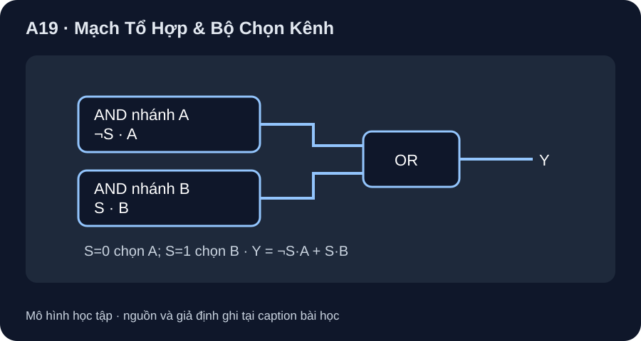

Mạch Tổ Hợp & Bộ Chọn Kênh
Một mux 2:1 chọn A hoặc B theo S; đầu ra chỉ phụ thuộc bộ đầu vào đang xét.
- Diễn dịch và dựng Y=¬S·A+S·B từ hai AND, một OR, một NOT.
- Lập đủ 2³=8 hàng bảng chân trị và so từng hàng với quy tắc chọn.
- Phân biệt biểu thức tổ hợp với latch/flip-flop có trạng thái.

Đọc hình bằng chữ
A đi qua cổng AND thứ nhất với NOT S; B đi qua AND thứ hai với S; hai kết quả OR để thành Y. Khi S=0 thì nhánh B bị khóa và Y=A. Khi S=1 thì nhánh A bị khóa và Y=B. Không có phần tử nhớ trong hình.
1. Ghép cổng thành mux 2:1
Đầu vào dữ liệu A,B và chọn S tạo Y=(¬S·A)+(S·B). Nếu S=0, ¬S=1 nên Y=A; nếu S=1 thì Y=B. Đây là hàm tổ hợp: với bộ S,A,B đang giữ ổn định, không cần biết giá trị Y ở chu kỳ trước. Xét đủ 2³=8 bộ đầu vào, không chỉ hai trường hợp S.
| S | A | B | ¬S·A | S·B | Y |
|---|---|---|---|---|---|
| 0 | 0 | 0 | 0 | 0 | 0 |
| 0 | 0 | 1 | 0 | 0 | 0 |
| 0 | 1 | 0 | 1 | 0 | 1 |
| 0 | 1 | 1 | 1 | 0 | 1 |
| 1 | 0 | 0 | 0 | 0 | 0 |
| 1 | 0 | 1 | 0 | 1 | 1 |
| 1 | 1 | 0 | 0 | 0 | 0 |
| 1 | 1 | 1 | 0 | 1 | 1 |
2. Đọc datasheet IC mux thật
TI SN74HC151 Rev. F là bộ chọn 8:1, có ba địa chỉ chọn và ngõ strobe. Hình A19-1 là mô hình 2:1 tự dựng, không sao chép sơ đồ chân hoặc nói rằng A/B/S nối trực tiếp vào một con SN74HC151 là chạy được. Nếu chọn IC này cho lab, phải chốt package, pinout, trạng thái strobe, mức nguồn, đầu ra Y/W và điều kiện timing theo bản datasheet tương ứng.
3. Hoạt động bảng tính
Sinh tám hàng S,A,B từ 000 đến 111; tính ¬S·A, S·B rồi OR. Thêm cột kỳ vọng IF(S=0,A,B); hai cột phải khớp tám hàng. Đổi thứ tự cột để xem vì sao thiếu hàng dễ che lỗi. Chưa có waveform hoặc mô phỏng độ trễ.
Khi S/A/B đổi gần nhau, các cổng có delay khác nhau và Y có thể có xung ngắn. Bảng trạng thái ổn định không chứng minh mạch không glitch hoặc điện áp ngõ ra hợp lệ cho tải; cần model/time test của thiết kế cụ thể.
Thiết kế F=¬S·A+S·¬B bằng một mux chọn A khi S=0 và chọn ¬B khi S=1. Lập đủ tám hàng S,A,B và ghi F. F có cần trạng thái trước đó không?
- 1 điểm: hai nhánh đúng
¬S·AvàS·¬B. - 2 điểm: theo 000,001,010,011,100,101,110,111, F là
0,0,1,1,1,0,1,0; không thiếu hàng. - 1 điểm: F chỉ phụ thuộc S,A,B hiện tại, không có trạng thái nhớ; bảng không đánh giá glitch.